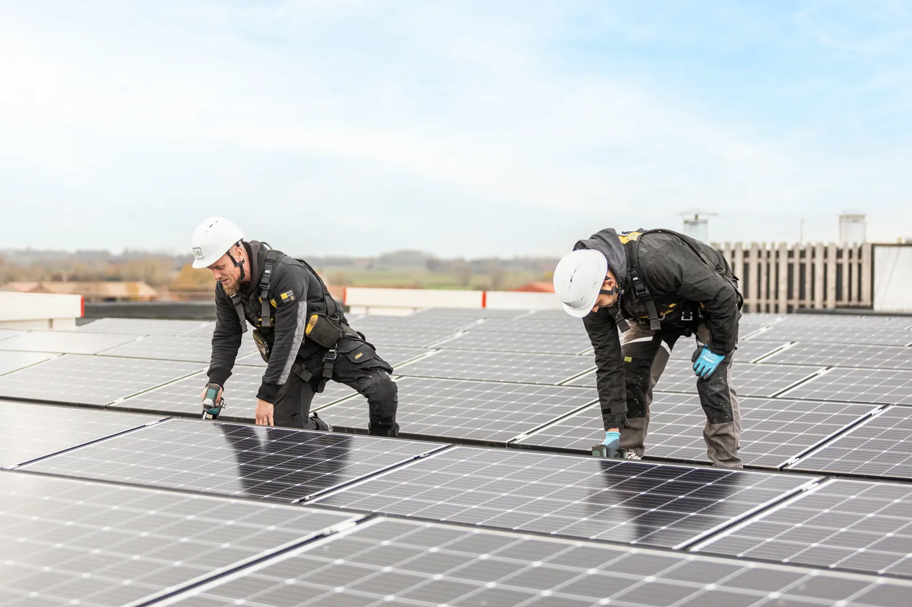

Zonnepanelen
- Wat het doet
- Zet daglicht om in stroom, tot dertig jaar lang.
- Wat wij plaatsen
- N-type monokristallijne panelen met Dual Glass, bestand tegen wind en neerslag.
- Goed om te weten
- We komen langs en bekijken uw verbruik, uw dak en de oriëntatie.